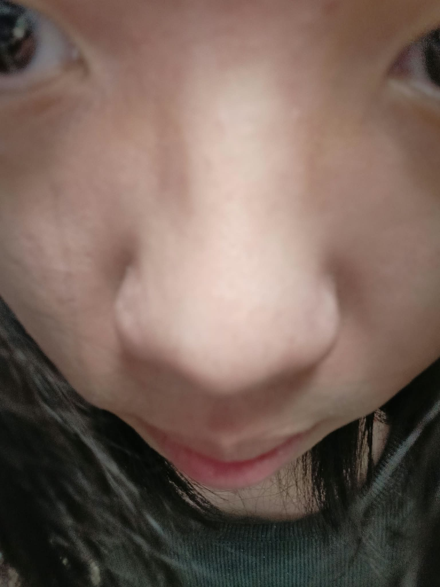
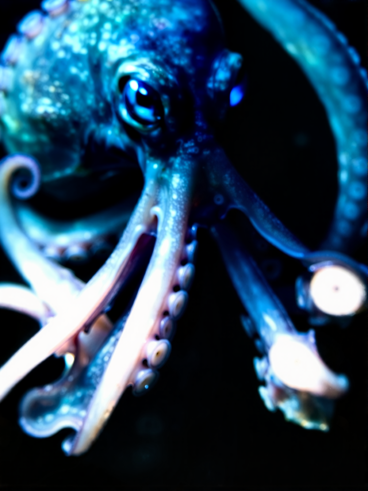
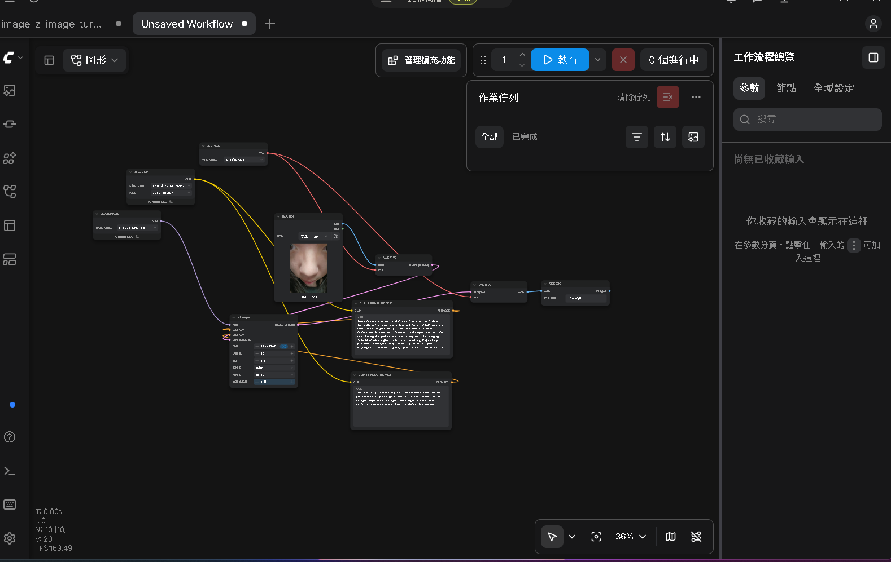

(masterpiece, best quality:1.2), extreme close-up fisheye low-angle perspective, exact original facial proportions and composition, organic octopus creature hybrid, bulbous octopus mantle head, wet iridescent cephalopod skin, suction cups lining the jawline and chin, slimy tentacles hanging from lower mouth, glossy alien eyes matching original eye placement, biological deep sea entity, dramatic specular highlights, cinematic lighting, photorealistic macro texture
(worst quality, low quality:1.4), normal human face, smooth porcelain skin, pretty girl, female, cartoon, anime, 3D CGI, changed composition, changed camera angle, distant shot, extra eyes, mutated extra nostrils, blurry, bad anatomy

架構說明：拆開使用獨立的 Diffusion Model、CLIP 和 VAE 載入器。照片進 VAE 編碼 轉成 Latent 後拉進 KSampler，搭配正反提示詞控制重繪強度，最後再透過 VAE 解碼 輸出成品圖。
這次用 ComfyUI 做圖生圖，一開始最不習慣的是所有東西都要自己手動拉線，連模型、CLIP 和 VAE 都要分開接好，少一條線或接錯孔系統就直接報錯給你看。但習慣這種節點式邏輯後，反而覺得比以前用一整包包好的介面更好除錯，哪一步出問題都很直觀。
本次目的在於「讓生成的章魚圖片能對照我的五官位置」。實際跑的時候踩了不少坑：
這次實作讓我搞懂了 Denoise 到底是怎麼在原圖結構和新提示詞之間拉扯的，比起亂槍打鳥碰運氣，用節點精確控制每個數值的出圖成功率高非常多。